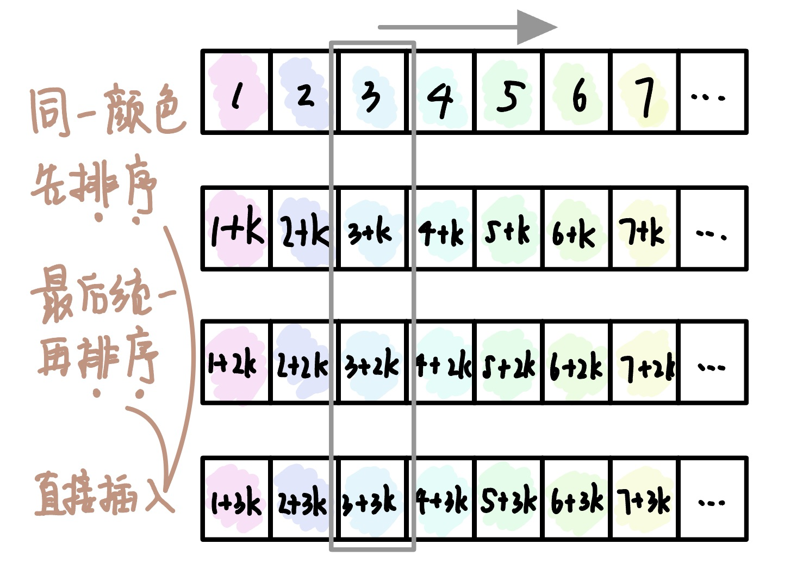

2022.09.19
从头到尾一个个排序。第i+1轮判断num[i]的大小，num[0]到num[i-1]已经排好序，要将num[i]插入到num[0]至num[i-1]中。
空间复杂度：O(1)
时间复杂度：最好O(n)，最坏O(n^2)
稳定性：稳定
适用性：顺序存储的线性表
void InserSort(ElemType A[], int n){
for(int i=2;i<=n;i++) // 依次将A[2]～A[n]插入前面已经排序序列
if(A[i]<A[i-1]){ // 发现逆序，需要将该元素插入到前边
A[0]=A[i]; // 将该元素放到哨兵位置
for(int j=i-1;A[0]<A[j];j--)
A[j+1]=A[j]; // 从后向前依次向后移动
A[j+1]=A[0]; // 元素复制到插入位置
}
}
直接插入中首先从后向前移动元素，实际就是在找位置。这一步可以优化成先用折半查找找到位置，然后集体移动元素。
空间复杂度：O(1)
时间复杂度：最好O(n)，最坏O(max{nlog2 n, n^2})=O(n^2)
稳定性：稳定
适用性：顺序存储的线性表
void InserSort(ElemType A[], int n){
int low,mid,high;
for(int i=2;i<=n;i++){ // 依次将A[2]到A[n]插入前面的已排序序列
A[0]=A[i]; // 将A[i]暂存到A[0]
// Step 1. 折半查找
low=1;high=i-1; // 折半查找范围
while(low<=high){
mid = (low+high)/2;
if(A[mid]>A[0]) high=mid-1; // 取左一半
else low=mid+1; // 取右一半
}
// Step 2. 统一后移
for(int j=i-1;j>=high+1;j--)
A[j+1]=A[j];
A[high+1]=A[0];
}
}
将一个表分成n个字表，每个字表内进行直接插入排序。然后再对整体进行直接插入排序。

空间复杂度：O(1)
时间复杂度：特定范围n：O(n^1.3)，最坏O(n^2)
稳定性：不稳定
适用性：顺序存储的线性表
【答案】：1+2+3+4=10，B
【答案】：A
【答案】：DA
【答案】：C
【答案】：B
【答案】：C
【答案】：A
【答案】：D -> B
【答案】：C
对序列{98,36,-9,0,47,23,1,8，10,7}来用希尔排序，下列序列（ ）是增量为4的一趟排序结果。 A. (10, 7, -9, 0, 47, 23, 1, 8, 98, 36} B. (-9, 0, 36, 98, 1, 8, 23, 47, 7, 10} C. {36,98,-9,0,23,47,1,8,7,10} D.以上都不对
【答案】：A
折半插入排序算法的时问复杂度为（ ）。
A.O(n) B. O(nlog_2 n) C. O(n^2) D.O(n^3)
【答案】：C
有些排序算法在每趟排序过程中，都会有一个元素被放置到其最终位置上，（）算法不会出现此种情况。 A. 希尔排序 B.堆排序 C.冒泡排序 D.快速排序
【答案】：A
以下排序算法中，不稳定的是(）。 A.冒泡排序 B.直接插入排序 C.希尔排序 D.归并排序
【答案】：C
以下排序算法中，稳定的是(）。 A. 快速排序 B. 堆排序 C.直校插入排序 D.简单选择排序
【答案】：C
【2009 统考真题】若数据元素序列{11,12，13,7,8,9,23,4,5}是采用下列排序方法之一得到的第二趟排序后的结果，则该排序算法只能是(）。
A.冒泡排序 B. 插入排序 C.选择排序 D.2路归并排序
【答案】：B
【2012统考真题】对同一待排序序列分別进行折半插入排序和直接插入排序，两者之问可能的不同之处是(）。 A. 排序的总趟数 B.元素的移动次数 C.使用辅助空问的数量 D.元素之间的比较次数
【答案】：D
【2014 统考其题】用希尔排序方法对一个数据序列进行排序时，若第1趟排序结果为9,1,4,13,7,8,20,23,15，则该道排序采用的增量（问隔）可能是（） A. 2 B.3 C.4 D. 5
【答案】：B
【2015 统考真题】希尔排序的组内排序来用的是（）。 A．直接插入排序 B.折半插入排序 C.快速排序D.归并排序
【答案】：A
【2018 统考真题】对初始数据序列(8,3,9,11,2,1,4,7,5,10,6)进行希尔排序。若第一趟排序结果为(1,3,7,5,2,6,4,9,11,10,8), 第二趟排序结果为(1,2,5,4,3,7,5,8,11,10,9}，則两道排序采用的增量（问隔）依次是(）。 A. 3,1 B. 3,2 C. 5,2 D. 5,3
【答案】：D